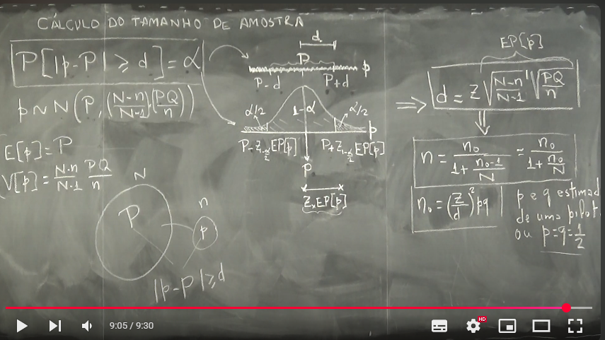
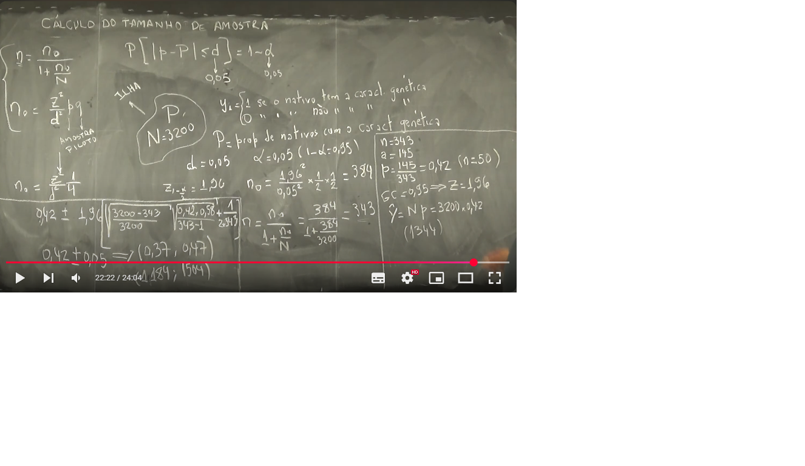

Semana 6
Semana 6
Aula 01 – Cálculo do Tamanho da Amostra para uma Proporção
🎯 Objetivo da Aula
Calcular o tamanho da amostra \(n\) necessário para estimar uma proporção populacional \(P\), com erro máximo \(d\) e nível de confiança \(1 - \alpha\).
📐 Fundamentação Teórica
Queremos controlar a probabilidade de erro:
\[ P(|p - P| \ge d) = \alpha \]
Ou seja, queremos que a diferença entre a proporção amostral \(p\) e a populacional \(P\) não ultrapasse \(d\), com probabilidade \(\alpha\).
A distribuição amostral de \(p\) (proporção amostral) é aproximadamente normal:
\[ p \sim N\left(P,\ \frac{N - n}{N - 1} \cdot \frac{PQ}{n} \right) \]
Onde:
- \(Q = 1 - P\)
- A variância inclui a correção de população finita: \(\frac{N - n}{N - 1}\)
O erro padrão é:
\[ EP[p] = \sqrt{ \frac{N - n}{N - 1} \cdot \frac{PQ}{n} } \]
O erro \(d\) será igual à margem multiplicada pelo erro padrão:
\[ d = z \cdot EP[p] \]
De onde podemos isolar \(n\).
🔁 Passo a Passo do Cálculo de \(n\)
- Começamos com:
\[ d = z \cdot \sqrt{ \frac{N - n}{N - 1} \cdot \frac{PQ}{n} } \]
- Se isolarmos \(n\) dessa equação, obtemos a fórmula com correção de população finita:
\[ n = \frac{n_0}{1 + \frac{n_0 - 1}{N}} \]
Onde \(n_0\) é o tamanho amostral sem correção, dado por:
\[ n_0 = \left( \frac{z}{d} \right)^2 \cdot p q \]
Na prática: - \(p\) e \(q\) podem ser estimados com valores a priori, - Se não houver informação prévia, usamos \(p = q = \frac{1}{2}\) (caso conservador).
📊 Interpretação Gráfica
A curva normal tem média \(P\) e desvio padrão \(EP[p]\).
Visualmente:
- Os limites do intervalo são \(P \pm d\).
- A região central representa a confiança \(1 - \alpha\).
- As caudas (esquerda e direita) representam \(\alpha/2\) cada uma.
Representação Ilustrativa: 
🧠 Observações
- Quanto menor o erro \(d\), maior será o tamanho da amostra necessário.
- O tamanho da população \(N\) afeta a correção de população finita.
- O valor de \(z\) depende do nível de confiança escolhido (exemplo: \(z = 1{,}96\) para 95%).
Aula 02 - Exemplo: Cálculo do Tamanho da Amostra para uma Proporção
🎯 Objetivo
Determinar o tamanho da amostra \(n\) necessário para estimar a proporção populacional \(P\), com erro máximo tolerado \(d\) e nível de confiança de 95%.
🧠 Informações fornecidas:
- População: \(N = 3200\)
- Nível de confiança: \(1 - \alpha = 0{,}95 \Rightarrow z = 1{,}96\)
- Erro máximo tolerado: \(d = 0{,}05\)
- Nenhuma informação prévia sobre \(p\), então usamos o caso conservador: \(p = q = 0{,}5\)
📐 Cálculo do Tamanho da Amostra Piloto
Utilizamos a fórmula:
\[ n_0 = \left( \frac{z}{d} \right)^2 \cdot pq \]
Substituindo os valores:
\[ n_0 = \left( \frac{1{,}96}{0{,}05} \right)^2 \cdot \frac{1}{4} = 384{,}16 \]
🔁 Correção para População Finita
Aplicamos a correção:
\[ n = \frac{n_0}{1 + \frac{n_0 - 1}{N}} = \frac{384{,}16}{1 + \frac{383{,}16}{3200}} \approx 343 \]
📊 Proporção Estimada com a Amostra Piloto
Com a amostra de tamanho \(n = 343\), foram observados \(a = 145\) indivíduos com a característica:
\[ p = \frac{145}{343} = 0{,}42 \quad , \quad q = 1 - p = 0{,}58 \]
🧮 Cálculo do Erro Padrão da Proporção
Usamos a seguinte fórmula com correção finita e correção adicional:
\[ EP[p] = \sqrt{ \frac{N - n}{N} } \cdot \sqrt{ \frac{pq}{n - 1} } + \frac{1}{2n} \]
Substituindo os valores:
\[ EP[p] = \sqrt{ \frac{3200 - 343}{3200} } \cdot \sqrt{ \frac{0{,}42 \cdot 0{,}58}{342} } + \frac{1}{2 \cdot 343} \approx 0{,}042 + 0{,}0015 = 0{,}0435 \]
📏 Intervalo de Confiança para \(p\)
\[ IC(p) = 0{,}42 \pm 1{,}96 \cdot 0{,}0435 = (0{,}337,\ 0{,}503) \]
Arredondando:
\[ IC(p) = (0{,}37,\ 0{,}47) \]
📈 Estimativa do Total Populacional
Estimador do total:
\[ \hat{A} = N \cdot p = 3200 \cdot 0{,}42 = 1344 \]
Intervalo de confiança para o total:
\[ IC(\hat{A}) = (3200 \cdot 0{,}37,\ 3200 \cdot 0{,}47) = (1184,\ 1504) \]
Representação Ilustrativa: 